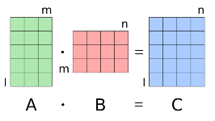
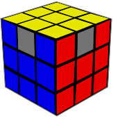

Matrices are a fundamental concept in mathematics that have a wide range of applications in fields such as physics, engineering, computer science, and economics. The word "matrix" is derived from the Latin word "mater," meaning "mother," which is a reference to the idea of a matrix as a kind of womb that gives birth to other mathematical concepts.


The origin of matrices can be traced back to ancient China, where they were used in the solution of systems of linear equations. Chinese mathematicians developed a method for solving systems of linear equations known as the "Gaussian elimination method," which involves representing the system as a matrix and then performing a series of operations on the rows of the matrix in order to reduce it to a simpler form. This method was described in a book called "Nine Chapters on the Mathematical Art," which was written around 200 BC.
In India, a similar method for solving systems of linear equations was developed around the same time. The Indian mathematician Brahmagupta used a matrix-like notation to describe systems of linear equations in his book "Brahmasphutasiddhanta," which was written in the 7th century AD. However, the use of matrices in India was largely confined to the solution of specific problems, rather than being developed as a general mathematical concept.


The concept of a matrix as a mathematical object was first introduced in the 19th century by the British mathematician Arthur Cayley. Cayley realized that matrices could be used to represent linear transformations, which are mappings between vector spaces that preserve linear relationships. He also developed the idea of matrix multiplication, which is the operation of multiplying two matrices together to produce a third matrix.
The concept of matrices was further developed in the early 20th century by a group of mathematicians known as the "matrix algebraists." These mathematicians, including Ernst Steinitz, Richard Dedekind, and Emmy Noether, worked to develop a more rigorous theory of matrices and to extend their use to other areas of mathematics, such as abstract algebra and group theory.


Today, matrices are a central concept in modern mathematics and have numerous applications in science, engineering, and technology. They are used in computer graphics, signal processing, quantum mechanics, artificial intelligence, and many other areas of research. Matrices have also been used to develop algorithms for solving large systems of linear equations, which are important in fields such as finance, economics, and data analysis.